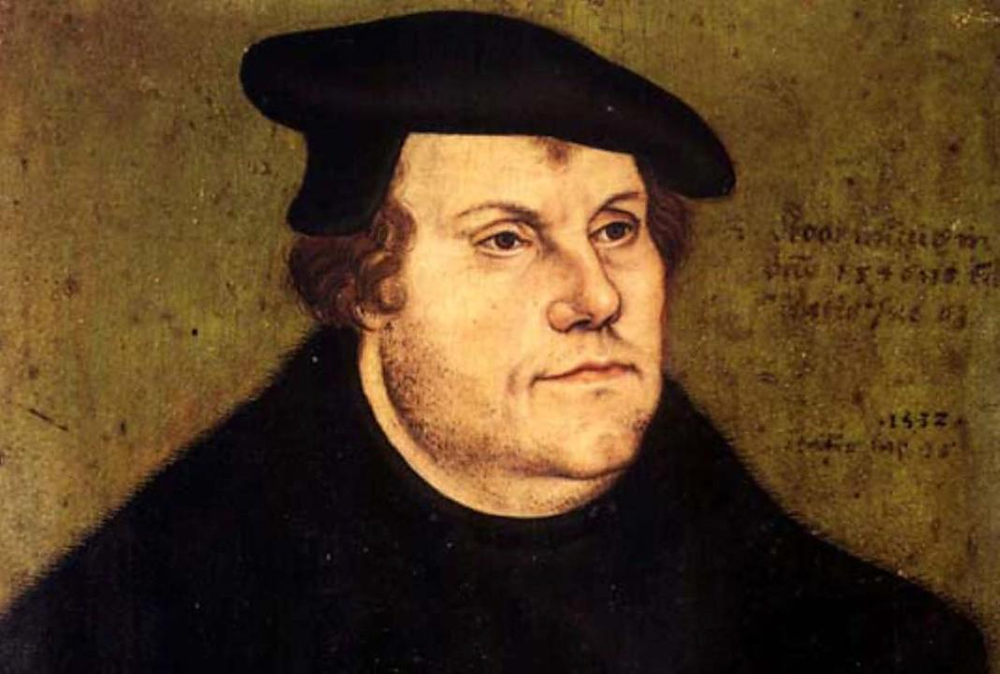

Martin Lutero fue un teólogo, sacerdote y reformador religioso alemán que vivió en el siglo XVI. Es conocido por ser el iniciador de la Reforma Protestante, un movimiento que buscaba reformar la Iglesia Católica y que tuvo un gran impacto en la historia del cristianismo. Nació el 10 de noviembre de 1483 en la ciudad alemana de Eisleben. Hijo del minero Hans Luder y Margharete Ziegler. Posteriormente cambiaría su apellido de nacimiento por Luther.

Su filosofia
La filosofía de Martin Lutero se centra en la idea de que la salvación se alcanza a través de la fe en Jesucristo y no a través de las obras. Lutero era partidario de una reforma burguesa moderada. Negaba que la Iglesia y el clero sirvieran de mediadores entre el hombre y Dios. La “salvación” del hombre, afirmaba, no depende de que se cumplan “buenas obras”, de que se observen misterios y ritos, sino de la sinceridad de su fe.
Como impacta nuestra vida
El legado de Martin Lutero trasciende ampliamente los confines de la teología y la historia eclesiástica. Su influencia se extiende a múltiples facetas de la sociedad, desde la cultura y la política hasta la educación y la filosofía moral. Su legado sigue siendo relevante hoy en día y es un recordatorio de la importancia de la libertad de pensamiento y la libertad de expresión. Sus revolucionarias ideas sobre el universo y la religión le valieron la implacable persecución de los inquisidores de Roma, que lo procesaron y lo condenaron a morir en la hoguera. Así nació su leyenda como mártir, que soportó el sufrimiento con tal de apegarse a los principios científicos.